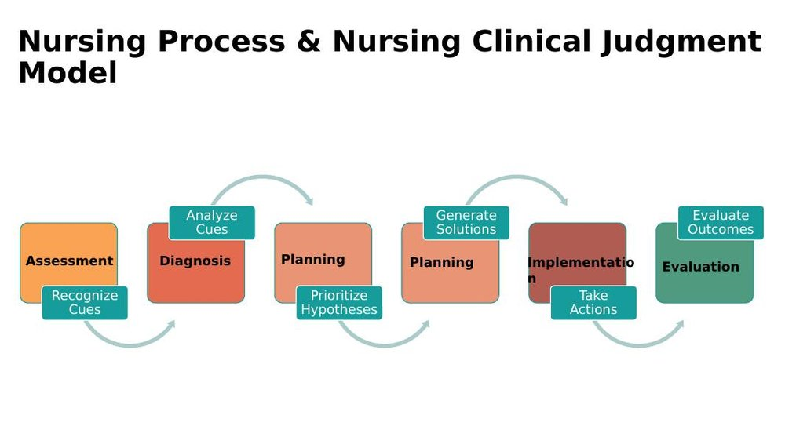
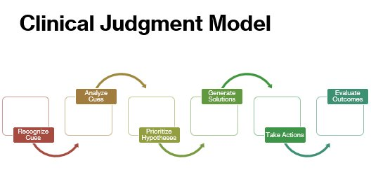

Fundamentals Review · Topic 2
Nursing Process, Clinical Judgment & SBAR
Three ways of thinking that show up constantly: the classic 5-step nursing process, the newer Clinical Judgment Model (CJM) built on top of it, and SBAR — the structured way to communicate a problem to a provider.
The Nursing Process
- A conceptual/theoretical framework created in the 1950s by the National Collegiate Boards of Schools of Nursing (the same body that creates the NCLEX) to teach nurses how to think — to guide safe, competent, quality patient care.
- Assessment: gathering information — not just the physical exam (subjective + objective findings), but also the medical record (the H&P is usually the best place to start), other chart documents, and labs/diagnostics. Be comprehensive; this drives everything downstream.
- Diagnosis: identifying and labeling the patient's problem — not the medical diagnosis. A patient with pneumonia might have the nursing problem "ineffective airway clearance," not "pneumonia." You'll be given a list of common nursing problems to choose from rather than needing to memorize one.
- Planning: setting goals and desired outcomes, collaboratively with the patient/family where possible. Goals must be SMART — specific, measurable, achievable, relevant, time-bound. Example: nursing problem = constipation → goal = "patient will have a bowel movement by the end of the shift" → outcome criteria (usually 2 per goal) = "soft, non-tender abdomen with no signs of constipation" and "a moderate-sized, soft, formed stool."
- Implementation: performing the planned nursing interventions — assessing/monitoring, actually implementing (e.g. giving a stool softener, encouraging ambulation), collaborating with the care team, teaching the patient/family, and addressing psychosocial needs (easy to forget, but critical). Interventions can be independent (no order needed) or dependent (needs a provider order).
- Evaluation: going back to the goals and outcome criteria and asking — were they met, partially met, or not met?
The Clinical Judgment Model (CJM)

- Introduced in 2019, after research found about 50% of nurses were involved in some kind of error, and roughly 65% of those errors traced back to poor clinical judgment. The CJM was built to teach that skill more explicitly — it doesn't replace the nursing process, it extends it.
- Recognizing cues — identifying relevant clinical data (aligns with Assessment). A cue is anything you observe or become aware of that points toward a problem.
- Analyzing cues — interpreting and clustering cues into patterns that link to a clinical problem (aligns with Diagnosis). Example: a patient who is tachypneic, short of air, and has a small arm laceration — the tachypnea and shortness of air cluster together as a respiratory issue; the laceration is a separate, unrelated finding. Don't force unrelated cues into one story.
- Prioritizing hypotheses — deciding which problem is the priority, using ABC (airway, breathing, circulation) as the guiding framework. In the example above, the respiratory issue outranks the skin laceration.
- Generating solutions — setting goals/outcomes and identifying what resources are needed (collaboration, equipment, medications).
- Taking action — implementing the plan (performing a skill, giving a med, collaborating, teaching).
- Evaluating outcomes — were the goals met, partially met, or not met?

Also called the Clinical Judgment Measurement Model (CJMM) — same thing. The key idea to remember: the nursing process's single "Planning" step becomes two CJM steps (Prioritize Hypotheses, then Generate Solutions), and "cues" is the CJM's own vocabulary for what the nursing process just calls assessment findings.
SBAR — Preparing to Call
- SBAR (Situation, Background, Assessment, Recommendation) is a structured communication technique for talking to a provider about something unexpected happening with a patient — designed to convey a lot of information succinctly.
- This course focuses on the problem-based SBAR (used when you need to call a provider about a concern) rather than the patient-focused version (used for shift-to-shift handoff report) — problem-based is what you'll be tested on.
- Five steps to prepare an SBAR, before you ever pick up the phone:
| Step | What You're Doing |
|---|---|
| 1. Identify the problem and its urgency | Is this important enough to call right now, or can it wait until rounds? This focuses what information you need to gather. |
| 2. Do a focused assessment | Gather only information relevant to the problem — e.g. for a suspected broken ankle, level of consciousness, breathing, and the ankle itself (open fracture? pain level?) matter; unrelated details like BMI don't. |
| 3. Think through relevant medical history | What in the patient's history could play a role in this specific problem? (E.g. for a fall: history of osteoporosis, prior fractures, arthritis.) |
| 4. Look for trend data | Check provider/nursing notes and the admission H&P if time allows — helps you skim more effectively and understand the fuller picture. |
| 5. Gather critical cues | Pull together the admission reason, allergies, meds, labs/diagnostics, and physical assessment findings that help tell the story — not every SBAR needs every category. |
The most common mistake new nurses make: including everything you know about the patient "just in case," instead of only what's directly relevant to why you're calling. That makes the story harder to follow, not easier. The whole call should take under 2 minutes.
SBAR — The Four Components
| Component | What Goes Here | Example (Mr. Brown, post-op TKA) |
|---|---|---|
| Situation | Only the symptoms that made you pick up the phone, plus who you are and where the patient is. Brief and specific. | "This is Mary, a nursing student from 5 North, calling about Joe Brown in room 531 — admitted two days ago for a total knee replacement. I'm calling because he has sudden shortness of air and severe chest pain." |
| Background | What contributed to the problem — this is where your current assessment data actually goes (not in the "Assessment" section, despite the name). Takes 30–60 seconds if you know your critical cues. | "His lips are cyanotic — new. O2 sat is 88% on room air, down from 93%. Heart rate is tachycardic in the 190s, respirations labored at 24/min. No cardiac history at admission. Placed on 3L nasal cannula 20 minutes ago; sat remains low." |
| Assessment | What you think is going on — one or two possibilities. It's okay to be uncertain, and okay to offer a guess as a newer nurse. | "I'm concerned Mr. Brown may be having a pulmonary embolism — it doesn't appear pain-related, since it came on so suddenly and his pain score was a 3 an hour ago." |
| Recommendation | Exactly what you want done, by whom, and by when — as specific as possible. This is the one section where more back-and-forth with the provider is normal. | "I'd like to start him on supplemental oxygen by face mask — do you agree? Would you like me to order a stat CT scan? If you're not able to come evaluate him, I may need to call rapid response." |
If a provider's response doesn't feel urgent enough for how concerning the situation is, it's appropriate to push back: "I appreciate what you're saying, but I'm very concerned this patient is deteriorating — are you able to come to the bedside?" If needed, escalate to your charge nurse or rapid response.
Self-Test Flashcards
Click a card to flip it and check your answer.
Practice Questions
All 20 Must Know + Extra Practice questions for this section, pulled from the same bank as Build Your Own Exam. Answer each, then submit to see your score and rationales.